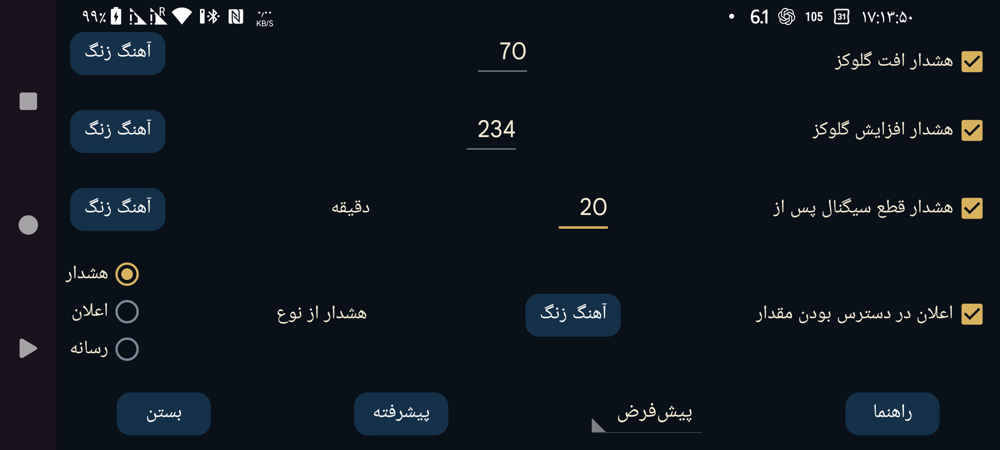

ar az be de es fa fr hi it ja ko nl pl pt ru sv tr uk uz zh en
با استفاده از مقدارهای «دادههای پیوسته» که از طریق بلوتوث دریافت میشوند، میتوانید هشدار افت یا افزایش گلوکز تنظیم کنید.
آستانهای که اگر گلوکز برابر یا پایینتر از آن باشد هشدار افت فعال میشود.
آستانهای که اگر گلوکز برابر یا بالاتر از آن باشد هشدار افزایش فعال میشود.
تعیین کنید چند دقیقه پس از دریافتنشدن مقدار گلوکز از طریق بلوتوث، هشدار قطع سیگنال پخش شود.
هشدار با وقوع هر یک از شرایط زیر متوقف میشود:
– مدت تنظیمشدهٔ هشدار سپری شود؛
– نمای نمودار لمس شود؛
– اعلان Android مربوط به Juggluco در حالت بازبودن قفل لمس شود؛
– دکمهٔ «لغو» روی اعلان هشدار Juggluco لمس شود؛
– مقدار گلوکز در «نمایش شناور» لمس شود.
گاهی حسگر موقتاً از کار میافتد. با فعالبودن این گزینه، وقتی دوباره شروع به کار کند اعلان میگیرید؛ البته تنها در صورتی که Juggluco را باز کرده و خودتان نبود مقدار را دیده باشید. اگر فقط از طریق اعلان Juggluco یا صفحهٔ ساعت متوجه وقفه شده باشید، اعلان «در دسترس بودن مقدار» فعال نمیشود.
برای هر هشدار میتوانید آهنگ زنگ و مدت پخش آن را تعیین کنید. (Ringtone)
اگر «هشدار بهعنوان زنگ هشدار» انتخاب شود، صدای هشدارهای افت، افزایش و قطع سیگنال در دستهٔ Alarm سیستم Android قرار میگیرد: بلندی صدا با نوار «زنگ هشدار» تنظیم میشود و حالت بیصدا یا لرزش تلفن آن را خاموش نمیکند. در حالت «اعلان»، میزان صدا در تلفن از نوار اعلان و در Galaxy Watch 4 تا 7 از نوار صدای سیستم پیروی میکند؛ اعلان «در دسترس بودن مقدار» نیز همیشه از همین دسته است. در حالت «رسانه»، بلندی صدا با نوار رسانه تنظیم میشود. روی بسیاری از تلفنها صدای رسانه در حالت «مزاحم نشوید» هم شنیده میشود، اما با اتصال هدفون معمولاً تنها در هدفون پخش میشود؛ صدای دستهٔ Alarm معمولاً از هدفون و بلندگوی اصلی شنیده میشود. صدای اعلان در حالت «مزاحم نشوید» پخش نمیشود. (Ringtone)
این تنظیمات را به یک نمایهٔ هشدار اختصاص دهید. به این ترتیب میتوانید میان تنظیمات هشدارها و گفتار جابهجا شوید. در «پیشرفته ← برنامههای زمانی» میتوان فعالشدن خودکار یک نمایه در ساعت مشخص را تعیین کرد. (Schedules)
این بخش هشدارهای پیشرفتهٔ «بسیار پایین»، «بسیار بالا»، «بهزودی پایین» و «بهزودی بالا» را دارد؛ همچنین میتوانید فعالشدن نمایهها را برای زمانهای مشخص برنامهریزی کنید.